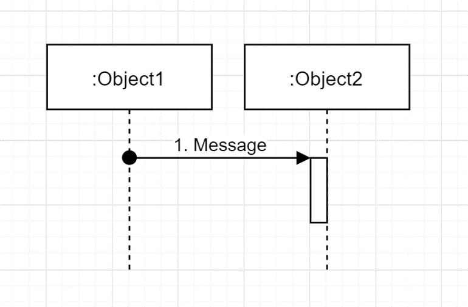

시퀀스 다이어그램 구성요소
시퀀스 다이어그램의 구성요소는 크게 활성객체와 메시지로 나눌 수 있습니다.
활성 객체
활성 객체는 시스템의 행위자이거나 시스템 내의 유효한 객체입니다.객체는 생명선(Life-line)을 가지고 있습니다. 생명선을 따라 작은 사각형이 나타나는데 이 부분을 활성 박스(Activation Box)라고 부릅니다.

활성 박스는 객체가 수행하는 오퍼레이션이 실행되고 있음을 나타냅니다.
활성 박스의 길이는 오퍼레이션의 실행 소요 시간을 나타냅니다.
실행 소요 시간은 순서 만을 감안하여 대충 어림잡아 그려집니다.
즉, 활성박스의 길이가 특정 시간 단위를 의미하지는 않습니다.
메시지
메시지는 객체 간 상호작용 혹은 의사소통 통신을 정의하는 요소입니다.한 객체에서 다른 객체로 전송되는 메시지는 한 객체의 생명선에서 다른 객체의 생명선으로 이동하는 것을 의미합니다.
메시지 전송 객체로부터 수신 객체로 보내는 메시지는 수신 객체의 오퍼레이션을 실행합니다.
